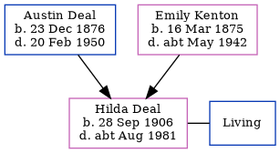

Hilda Mary Cook (née Deal) 1906 - c1981
[ Home ] | [ Calendar ] | [ Surnames Index ] | [ Family History ]A drapery shop's assistant and the youngest of 3 children of Austin Deal (a cemetery caretaker) and Emily Kenton, Hilda Deal, the second cousin once-removed on the father's side of Nigel Horne, was born in Chartham, Kent, England on Sep 28, 19061,2,3 and baptized there at St Mary's Church, Church Lane on Oct 28, 1906. She married Thomas Cook in Hammersmith, London, England around Nov 19444.
Throughout her life, Hilda lived in several places: at Kent County Lunatic Asylum in Chartham on Apr 2, 19115; at Railway Tavern in Chartham in 1915; and at Cemetery Lodge in Chartham on Sep 29, 19391 (when she was living with her parents).
She died c. Aug 1981 in Canterbury, Kent, England3.
Parents
- Austin Alfred was born on Dec 23, 1876
- Emily Ellen was born on Mar 16, 1875
Citations
- 1939 Register - Findmypast (was recorded at this address)
- England & Wales births 1837-2006 - Findmypast
- England & Wales deaths 1837-2007 - Findmypast
- England & Wales Marriages 1837-2005 - Findmypast
- 1911 Census for England & Wales - Findmypast (was age 4 and the daughter of the head of the household)
Media
England & Wales births 1837-2006 - BMD/B/1906/4/AZ/000152/136
1911 Census for England & Wales - GBC/1911/RG14/04308/0064/11
1939 Register Transcription - TNA-R39-1803-1803E-026-28
England & Wales deaths 1837-2007 - BMD/D/1981/3/AZ/000194/119
England & Wales marriages 1837-2005 - BMD/M/1944/4/AZ/000277/115
England Births & Baptisms 1538-1975 - R_885425854
Kent Baptisms - GBPRS/CANT/B/96195480
Family Tree
Generated by Ged2Site. Last updated on Jul 20, 2025